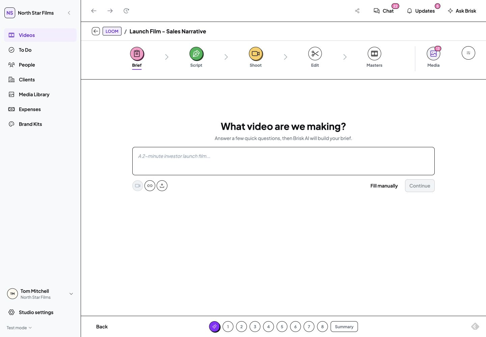
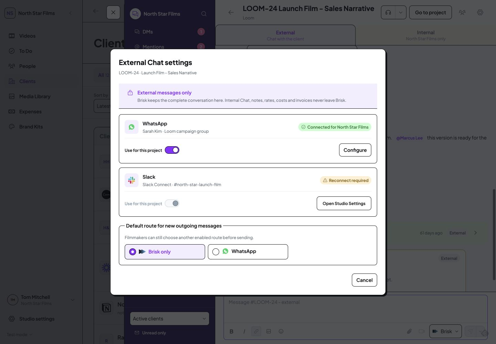
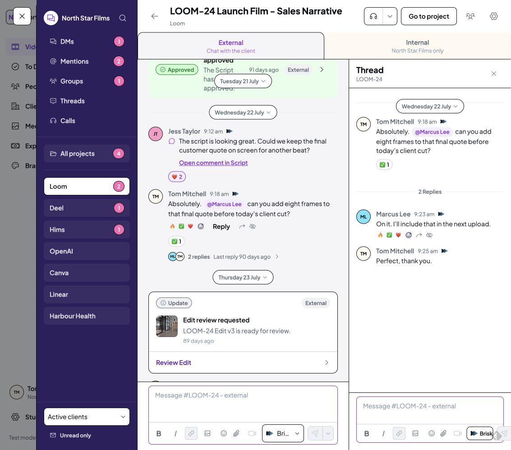

B20: nested Escape closes the surrounding task
Current Brisk prototype, Studio Staff, isolated origin8768. All screenshots are genuine 1440 x1000 captures at matching scale. These are interaction states, not proposed fixes. Click an image to open the original readable screenshot.
Written approved standard: inner menus and pickers consume Escape when they close, preserving the parent task. The Shoot TimeSelect occurrence directly violates this EditingDialog rule. Global Chat search shows a related boundary defect. The working settings consumer is supporting current evidence, not an approved new design.
Current search before Escape
Search all messages is the inner layer. The Esc affordance is visible beside the input. Underlying route: project Brief. Open original · DOM evidenceCurrent result after one Escape

Both Search and Global Chat are gone; focus is body in recorded DOM. This is the observed boundary defect, not proof of draft loss. Open original · DOM evidenceWorking current comparison before Escape

External Chat settings sits inside the same Global Chat drawer. Underlying route: Clients. This is a current implementation reference, not an approved screenshot. Open original · DOM evidenceWorking current comparison after one Escape
Only settings closes. Global Chat remains and the settings opener has visible focus. Preserve this scoped behaviour. Open original · DOM evidenceRecommendation: consume Escape in the active inner layer; retain parent and restore its opener. Let a later Escape close the parent. Source: AppShell54, ChatPage688; ShootStagePage8899. No sends, settings changes, or dirty-draft loss were tested.
Related actual thread consumer
Matching1133 desktop comparison, separate from the1440 search/settings pairs above. This is an additional occurrence of B20.
Actual thread before Escape

Existing parent and two replies. Empty composer; no draft entered or sent. Genuine1133 ×1000 capture. Open original · DOM evidenceActual thread after one Escape
Thread and Global Chat both close; focus is body. Compare H103: visible Close thread retains the surrounding project conversation. Open original · DOM evidence